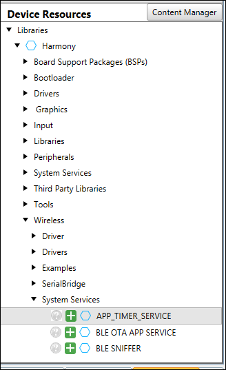
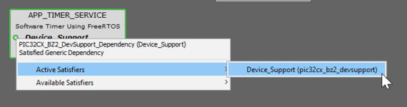
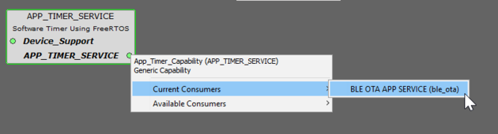
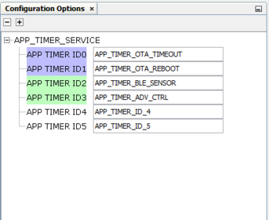
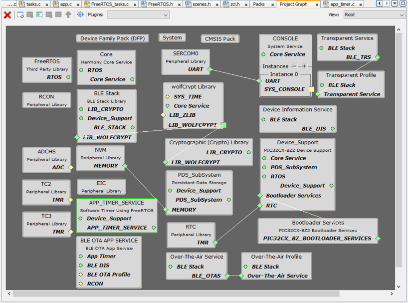
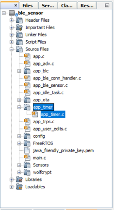

14.6 Application Timer Service
Introduction
The application timer service can be used to provide timer service required for the application functionality. Application timer service provides one shot or periodic timeout events for application.
Application Timer Service usage with MPLAB Code Configurator(MCC)
This section explains the steps required by a user to develop/utlize this application timer service using MPLABx MCC Framework
Tip: New users of MPLAB Code Configurator (MCC) are recommended to go through the overview of MCC. Users can add/remove different components like peripheral support and other wireless functionality by following steps mentioned here.
- Create a new MCC Harmony Project -- link for instructions.
- Ensure that wireless_system_pic32cxbz2_wbz45 repo is available locally in the development repo.
- Open MCC. The Wireless System
Service components will be displayed in available components --> Wireless
--> System Services as shown in the below figure.
- Drag APP TIMER SERVICE component from available components to project graph area as shown in below figure. Accept Dependencies or satisfiers, select "Yes".
- Click on the Device Support dependecny satisfiers to know the device
supported for this service and select pic32cx_bz2_devsupport.
- Click on the
APP_TIMER_SERVICE to know the capability consumers and link the required
component which is in need of the appication timer service.
- Accept Dependencies or satisfiers, select "Yes"
- Select the APP TIMER SERVICE component and provide the required
configuration for Timer IDs.
- Here for e.g., BLE sensor
application in the project as shown in below figure.
- Generate the code. Refer link for more details.
- After generating the program
source from MCC interface by clicking Generate Code, the application timer
service can be found in the following project directories.
User Application Development
- Users can use the APP_TIMER_SetTimer API function to start the timer funcationlity for the provided Timer ID.
- The one shot timers will provide the required callback and post the message in the application task with the Timer message ID associated with the Timer ID provided.
- In app.c file function APP_Tasks, the posted task can be processed and executed for required functionalities within the APP_STATE_SERVICE_TASKS application state.
- Function APP_TIMER_StopTimer and APP_TIMER_ResetTimer can be used to stop
the required timer ID and reset the required timer ID
respectivly.Note: Refer the API details of APP TIMER for further details.